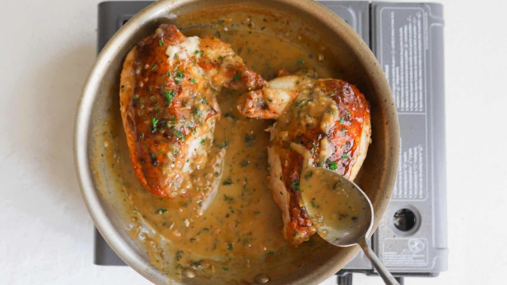

Best Chicken Recipe!

Roasted Airline Chickens Breast
This pan seared and then roasted bone in chicken breast is a beautiful way to get perfectly cooked chicken. This method will start your beautiful butter sauce while the chicken is cooking!
Ingredients:
- Bone-in chicken breast
- Chicken Stock
- White Wine
- Butter
Steps to make:
- Place chicken skin side down in hot pan
- After skin is browned, flip
- Add 1 cup chicken stock
- Place pan in over until internal temperature of chicken is 165 degrees.
- Add white wine to pan and reduce
- Add cold butter, melt and baste chicken
- Serve and top with sauce